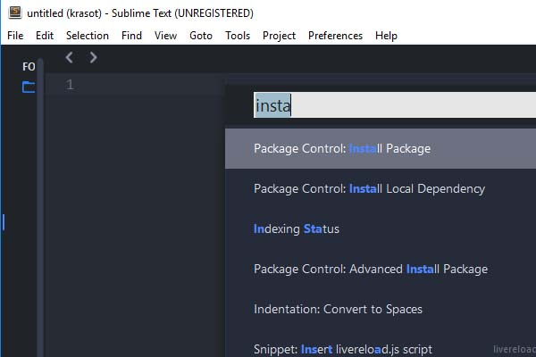
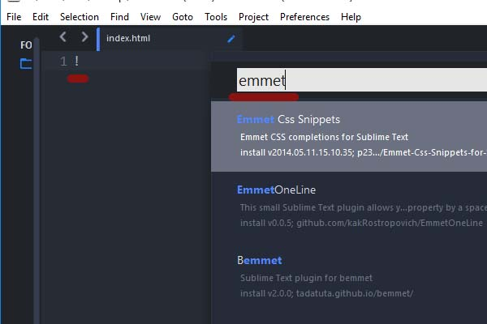
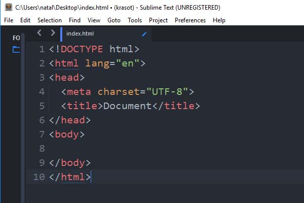
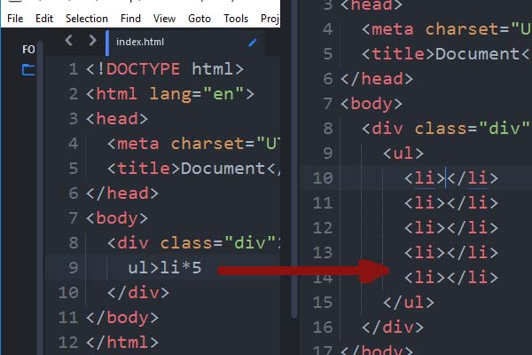

Рассмотрим настройку sublime text 3для frontend разработки.
Для начала скачаем программу с официального сайта.
Далее запускаем установщик.
После запускаем программу и приступаем к настройке.
Содержание статьи [Скрыть содержание]
Первым делам добавляем пакеты.
Нажимаем ctrl+shift+p откроется табличка пишем слово install и выбираем пункт Install Package.

Установка emmet
Вторым делом устанавливаем emmet.
Это плагин, который позволяет ускорить разработку верстки сайта.
Зажимаем ctrl+shift+p заходим в install packege и прописываем emmet, плагин появится ниже устанавливаем.

Продолжаем настройку sublime text 3.
Создаем на рабочем столе файл index.html и открываем его с помощью sublime text.
Пишем восклицательный знак, нажимаем клавишу tab.
Мы увидим, что отработает плагин emmet и появится структура нового документа.
Увеличим шрифт, путем зажатия shift+колесеко мышки.

Создадим div. Пишем .div и tab.
Внутри дива пишем ul>li*5, нажимаем клавишу tab получается структура.
Если у нас собьются в строках li или div, то чтобы их выравнять нажмем горячую клавишу функции reindent.
Клавишу зададим в пункте меню preferebces — key bind
Пробуем выравнять.

Следующий пакет это AutoFileName.
Этот пакет в sublime text позволит быстро прописать путь до файлов.
При вводе путя быдет высвечиваться подсказка с выбором папки или файла.
Установим sass.
Без плагина sass не будет работать emmet в файлах sass.
Основная работа будет с препроцессором sass.
Установим внешнее оформление для sublime text.
- Установим OneDarkMaterial-Theme это тема.
- Установим цветовую схему OneDarkColor-Schema.
Настройка sublime text
Для рабочего места используем заранее созданную конфигурацию.
Открываем Preferences – Settings.
Откроется окно настроек программы.
Копируем код внизу и вставляем в правую часть экрана, сохраняем.
- auto_complete: true, лучше использовать поначалу включенным, это свойство помогает дополнять код в процессе верстки.
- bold_folder_labels: true эта настройка делаем папки побольше когда они помещены сбоку программы.
- fold_buttons: false отключаем кнопки раскрытия и закрытия кода.
- Чтобы подсветить всю строку используем highlight_line: true.
- За расстояния между строками отвечает свойство line_padding_bottom: 2.
- tab_size: 2 размер табов в коде.
- Чтобы строки, которые уходят за границы не переносились на новые выставим word_wrap: false.
Отключаем миникрату сбоку view – hideminimap.
Чтобы убрать или вытащить верхнее меню в sublime text нажимаем клавишу Alt.